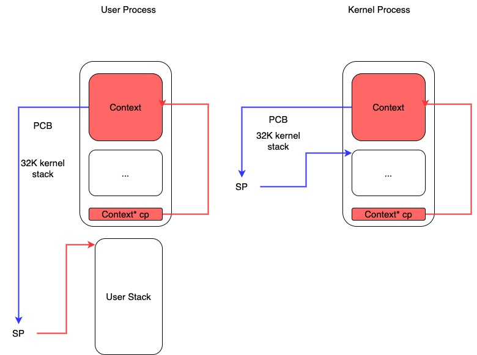

南京大学 ICS-PA 总结
https://nju-projectn.github.io/ics-pa-gitbook/ics2021/index.html
这个课程我是在微博上看到包云岗老师转发进来的，之前也没有搞过这方面的实验所以就想试试。个人感觉是对于已经相对熟悉计算系体系结构的同学来说，也不是特别简单。许多地方需要理解代码为什么这么写，你还需要假设自己是在某一个抽象层次上，是看不到其他层次抽象的东西的。感觉Makefile写的非常好，另外就是一些链接脚本也值得学习下。我觉得整个项目是个宝藏，时不时可以拿出来翻翻作为参考。
整个项目大概分为这么几个部分：
- NEMU. 这个可以认为就是QEMU. 模拟计算机包括CPU和外设等硬件设备。里面有个特别强的功能就是difftest, 比如可以同时运行spike/qemu来对比CPU内存中数据，检查你的实现是否正确。
- AM(abstract-machine). 这个东西就比较精巧了，目的是抽象底层各种计算机架构，有点类似于Windows HAL. 有了这个东西在上面开发操作系统，就可以跑在许多个系统上（qemu, spike)了甚至native系统上。提供了几个扩展：
- IOE(IO extension). 将外设包装起来
- CTE(context extension). 将上下文切换包装起来
- VME(virtual memory extension). 讲虚拟内存扩展包装起来
- Nanos-lite. 这个就是操作系统，在上面需要实现各种syscall, 使用的是AM上的各种扩展。
- Navy-apps. 各种应用程序吧，只能使用nanos-lite提供的各种syscall.
最后跑起来的可执行程序只有NEMU, AM + nanos-lite + navy-apps 都交叉编译(我使用的是riscv64)被打包成为二进制镜像被加载NEMU里面，二进制被加载到特定的内存位置上开始被解释执行。在没有VME的时候，交叉编译的二进制都是从类似0x8000000开始执行的，使用的是物理地址；有了VME之后交叉编译的二进制就可以放在任意地址上了。
整个PA有些东西我也没有搞：各种trace(ftrace,iotrace etc), 声卡，移植SDL，跑各种应用程序。对于不是课程学生来说，最重要的是选择自己感兴趣并且稍微有点挑战的内容来完成。我的实现在这里 https://github.com/dirtysalt/ics-pa
PA1 主要工作是在NEMU里面增加watchpoint, watchpoint就涉及到表达式的求值。
NEMU里面一个很有意思的工作就是允许使用图形化界面进行配置 `make menuconfig`. 按照PA说明给出的原理就是有个很简单的语言kconfig, 然后可以使用图形化来读取kconfig并且生成对应的头文件autoconf.h以及auto.conf。autoconfig.h里面都是类似 `#define CONFIG_XXX` 这样的选项给C语言使用的，auto.conf则是可以被include到Makefile中。
PA2 主要工作有下面几个：
- 将各种CPU指令行为实现，这个最好是按需实现。参考内容有
- 实现AM里面几个基本库比如strlen, printf等
- 实现AM里面的IOE(io extension).
实现CPU指令最好是按照test cases需要一个个去实现，每条指令都可以使用RTL(register transfer language)来实现，因为每个指令实现起来可能还会使用的到中间状态，而这些中间状态则需要使用临时寄存器。某些指令是伪指令需要找到具体指令，对于某些指令则还需要看看汇编代码里面的hex格式进行对照。最终大约需要实现下面这些
#define INSTR_LIST(f) f(auipc) f(ld) f(sd) f(inv) f(nemu_trap) f(addi) f(jal) f(jalr) \ f(add) f(sub) f(sltiu) f(beq) f(bne) f(addiw) f(slli) f(lw) f(addw) f(sh) f(srai) \ f(lbu) f(sllw) f(andi) f(and) f(or) f(sltu) f(xori) f(ori) f(sb) f(sraiw) f(sw) \ f(mul) f(div) f(divu) f(mulw) f(divw) f(divuw) f(remw) f(remuw) f(rem) f(remu) \ f(srli) f(bge) f(bgeu) f(blt) f(bltu) \ f(slti) f(slt) f(lh) f(lhu) f(subw) f(srlw) f(sraw) f(slliw) f(srliw) f(lui) \ f(sll) f(lb) f(xor) \ f(csrrw) f(csrrs) f(ecall) f(mret)
好像JAL和BRANCH里面还会将指令中各个部分的内容进行bit mix, 这个实现起来需要非常小心。
// offset[20|10:1|11|19:12] // offset[19|9:0|10|18:11] #define JAL_SHUFFLE(imm) \ (((imm >> 19) & 0x1) << 19) | ((imm & 0xff) << 11) | (((imm >> 8) & 0x1) << 10) | ((imm >> 9) & 0x3ff) // offset[12|10:5|4:1|11] // offset[11|9:4|3:0|10] #define BRANCH_SHUFFLE(imm) \ (((imm >> 11) & 0x1) << 11) | ((imm & 0x1) << 10) | (((imm >> 5) & 0x3f) << 4) | ((imm >> 1) & 0x0f)
许多现代体系结构处理外设上都采用MMIO(memory mapped io), 相当于给IO设备分配某个特定的地址空间，访问地址空间需要使用volatile关键字不然编译器是不知道存在副作用的。另外一种设备管理方式则是使用端口IO(port io). 为了能够兼容不同CPU/体系结构(NEMU/QEMU), AM需要在这层进行封装，将这些IO读写包装成为一种形式，这个就是IOE的用途。我记得后来在file和VGA映射上做了个hack, 我没有将write(fd, buf)内容写入，而是直接将buf指针传到下面了。
这节我记得实现了一个ftrace, 大致就是可以根据指令结合ELF找到当前属于什么函数。对于riscv来说没有什么call/ret, 都是jmp, 所以需要在其他地方判断是call/ret. 我们可以通过跳转地址属于func start addr来判断：如果是函数首地址，那么认为是call, 否则就是ret. 函数栈可能会出现不匹配，我猜想原因可能是因为尾递归造成的：如果我在尾递归做个简单操作比如+1就可以匹配上了。
这节有个NEMU benchmark跑分，我的实现可以说是非常的差，好像只有4分左右，惨不忍睹的那种。
PA3 两个部分：CTE(context extension, 上下文切换)以及unix-like file映射。unix-like file映射没有什么新鲜东西，所以主要还是上下文切换，以及包括如何简单地加载ELF文件。
当前阶段的实现，都是将ELF直接加载到某个物理地址上，所以如果ELF都是相同的start address的话那么就只能加载一个ELF。主要就是下面这段代码(nanos-lite/src/loader.c)：
- 读取ELF header部分
- 找到所有的program header里面PT_LOAD段
- 可以加载segment里面有
- (offset, file_size, vaddr, mem_size) 4个字段
- 表示从offset读取file_size字节，加载到[vaddr, vaddr+mem_size)这个地址上
- 多余的内存空间需要设置0.
- 这个加载部分还是涉及到虚拟内存的映射
- 最后代码入口是在 elf_header.e_entry 这个地址上
- 如果没有虚拟内存的话，那么就需要确保这个入口地址是可用的物理内存地址。
PA4 三个部分：进程切换，虚拟内存，以及用户态和内核态栈切换（我没太看懂为什么需要它，因为每个用户进程都可以访问内核栈）。
如果大学学过x86汇编啥的，大约CTE对应的就是里面的中断：触发中断会有个专门的中断例程，并且带上中断号。这个例程地址存放在某个固定的寄存器上，对于这类内存地址的虚拟内存映射都是在内核初始化阶段搞好的，这个在PA4的VME里面可以看到。这个上下文切换非常有意思，需要结合栈结构+ABI协同工作。
riscv64里面的中断例程大约就是这样的 (abstract-machine/am/src/riscv/nemu/trap.S), 分为几个部分：
- 在栈上开辟 `CONTEXT_SIZE` 大小的空间
- 将31个寄存器 + mcause + mstatus + mepc 全部到在栈上
- 然后将栈针给a0, 这样进入 __am_irq_handle 的话，其实可以得到所有的寄存器内容
- 返回之后其实我们可以切换成为另外一个 `Context*` , 这个值保存在a0上（这个是ABI决定的）
- `mv sp, a0` 之后的回复操作其实就可以达到上下文切换的效果
- 在 Context 中设置 mstatus 中MPIE位，还可以在mret的时候把中断打开
- 在 Context 中的 mepc 中可以记录上次切换的PC地址，然后mret的时候又可以切换回去
// abstract-machine/am/include/arch/riscv64-nemu.h struct Context { // TODO: fix the order of these members to match trap.S uintptr_t gpr[32], mcause, mstatus, mepc; // TODO(yan): I don't know what's that for? what's dir? // page table directory? void* pdir; };
#define concat_temp(x, y) x ## y #define concat(x, y) concat_temp(x, y) #define MAP(c, f) c(f) #if __riscv_xlen == 32 #define LOAD lw #define STORE sw #define XLEN 4 #else #define LOAD ld #define STORE sd #define XLEN 8 #endif #define REGS(f) \ f( 1) f( 3) f( 4) f( 5) f( 6) f( 7) f( 8) f( 9) \ f(10) f(11) f(12) f(13) f(14) f(15) f(16) f(17) f(18) f(19) \ f(20) f(21) f(22) f(23) f(24) f(25) f(26) f(27) f(28) f(29) \ f(30) f(31) #define PUSH(n) STORE concat(x, n), (n * XLEN)(sp); #define POP(n) LOAD concat(x, n), (n * XLEN)(sp); #define CONTEXT_SIZE ((32 + 3 + 1) * XLEN) #define OFFSET_SP ( 2 * XLEN) #define OFFSET_CAUSE (32 * XLEN) #define OFFSET_STATUS (33 * XLEN) #define OFFSET_EPC (34 * XLEN) .align 3 .globl __am_asm_trap __am_asm_trap: addi sp, sp, -CONTEXT_SIZE MAP(REGS, PUSH) csrr t0, mcause csrr t1, mstatus csrr t2, mepc STORE t0, OFFSET_CAUSE(sp) STORE t1, OFFSET_STATUS(sp) STORE t2, OFFSET_EPC(sp) # set mstatus.MPRV to pass difftest li a0, (1 << 17) or t1, t1, a0 csrw mstatus, t1 # first argument as ctx pointer. mv a0, sp jal __am_irq_handle # TODO(yan): we ignore return ctx? # a0 is address of Context* mv sp, a0 LOAD t1, OFFSET_STATUS(sp) LOAD t2, OFFSET_EPC(sp) csrw mstatus, t1 csrw mepc, t2 MAP(REGS, POP) addi sp, sp, CONTEXT_SIZE mret
这个Context是如何和进程关联起来的呢？下面是进程结构体PCB定义(nanos-lite/include/proc.h)
typedef union { uint8_t stack[STACK_SIZE] PG_ALIGN; struct { Context* cp; // TODO(yan): to record user space stack end. // so we can reuse user space stack. void* user_stack_end; AddrSpace as; // we do not free memory, so use `max_brk' to determine when to call _map() uintptr_t max_brk; }; } PCB;
我花了一些时间整理了一下Context以及PCB还有kernel stack/user stack之间的关系，大约是下面这样的:
- 对于User Process会有个专门的user stack， 而Kernel Process的stack就在这个PCB上
- Context里面会保存sp指针, PCB头部会有这个context*指针
- 每次上下文切换会有使用到stack保存Context. use process在user stack上保存，kernel process在kernel stack上保存。
- 所以stack必须确保至少有个 CONTEXT_SIZE 大小，否则上下文切换会出问题。

虚拟内存有几件事情比较重要：
- 正确实现页表结构，对于riscv64来说有3级页表
- kernel初始化的时候已经分配了1级页表，之后的分配需要动态2，3级页表
- 在user process初始化的时候可以直接拷贝1级页表，这样切换到user process时候也可以正常访问kernel内存空间。
- NEMU在实现页表转换的时候注意要使用 `paddr_read/write`, 因为NEMU实现上还有个转换。
- 判断地址是否需要转换，可以根据 `satp` 寄存器的最高位。
- 这个是我当时写的例程(nemu/src/isa/riscv64/system/mmu.c)，可以看到里面加了不少调试信息，另外我把页表的最低12位设置了0x337来进行正确性校验。
关于PIC/PIE, TLB设计，以及页表转换的坑（取指令的时候可能会跨越两个页表），我觉得也挺有启发的，所以粘贴在这里。
这就是PIC(position-independent code, 位置无关代码)的基本思想. 今天的动态库都是PIC, 这样它们就可以被加载到任意的内存位置了. 此外, 如果一个可执行文件全部由PIC组成, 那么它有一个新名字, 叫PIE(position-independent executable, 位置无关可执行文件). 编译器可以通过特定的选项编译出PIE. 和一般的程序不同, PIE还能在一定程度上对恶意的攻击程序造成了干扰: 恶意程序也无法提前假设PIE运行的地址. 也正是因为这一安全相关的特性, 最近的不少GNU/Linux的发行版上配套的gcc都默认生成PIE. 不过, 使用相对寻址会使得程序的代码量增大, 性能也会受到一些影响, 但对于早期的计算机来说, 内存是一种非常珍贵的资源, 降低性能也是大家不愿意看到的, 因此对于PIC和PIE, 大家也会慎重考虑.
对于x86和riscv32来说, TLB一般都是由硬件来负责管理的: 当TLB miss时, 硬件逻辑会自动进行page table walk, 并将地址转换结果填充到TLB中, 软件不知道也无需知道这一过程的细节. 对PA来说, 这是一个好消息: 既然对软件透明, 那么就可以简化了. 因此如果你选择了x86或者riscv32, 你不必在NEMU中实现TLB. 但mips32就不一样了, 为了降低硬件设计的复杂度, mips32规定, page table walk和TLB填充都由软件来负责. 很自然地, 在mips32中, TLB miss被设计成一种异常: 当TLB miss时, CPU将会抛出异常, 由软件来进行page table walk和TLB填充.
TLB管理是一个考量软硬件tradeoff的典型例子, mips32把这件事交给软件来做, 毫无疑问会引入额外的性能开销. 在一些性能不太重要的嵌入式场景中, 这并不会有什么大问题; 但如果是在一些面向高性能的场景中, 这种表面上简单的机制就成为了性能瓶颈的来源: 例如在数据中心场景中, 程序需要访问的数据非常多, 局部性也很差, TLB miss是非常常见的现象, 这种情况下, 软件管理TLB的性能开销就会被进一步放大.
最后提醒一下x86页级地址转换时出现的一种特殊情况. 由于x86并没有严格要求数据对齐, 因此可能会出现数据跨越虚拟页边界的情况, 例如一条很长的指令的首字节在一个虚拟页的最后, 剩下的字节在另一个虚拟页的开头. 如果这两个虚拟页被映射到两个不连续的物理页, 就需要进行两次页级地址转换, 分别读出这两个物理页中需要的字节, 然后拼接起来组成一个完成的数据返回. 不过根据KISS法则, 你现在可以暂时不实现这种特殊情况的处理, 在判断出数据跨越虚拟页边界的情况之后, 先使用assert(0)终止NEMU, 等到真的出现这种情况的时候再进行处理. 而mips32和riscv32作为RISC架构, 指令和数据都严格按照4字节对齐, 因此不会发生这样的情况, 否则CPU将会抛出异常, 可见软件灵活性和硬件复杂度是计算机系统中又一对tradeoff.